TCG Trusted Boot Chain in EDK II
Trusted Boot Flow
Trusted boot flow is activity that the host platform firmware measures, including firmware components, into the Trusted Platform Module (TPM) Platform Configuration Register (PCR), and records the actions in an event log. The TPM acts as a static Root of Trust for Storage (RTS) and Root of Trust for Reporting (RTR). The platform firmware here acts as a Static Root of Trust for Measurement (SRTM).
In this document, we use TPM 2.0 as an example. Unless otherwise specified, the term TPM below refers to a TPM 2.0 device.
PCR, Measurement, and Attestation
The TPM PCRs hold the values of the data measurement. The measurement follows the equation below. This operation is PCR extend.
PCR (new) = HASH (PCR (old) || HASH(Data))
PCR extend is the only way to modify the PCR value. If a platform extends a PCR multiple times, all data is hashed into the PCR. The vertical bars in parentheses designate the catenation of the old and new data, respectively.
General Guideline
A typical TPM has 24 PCRs. PCRs [0-15] represent the SRTM and are associated with Locality 0. PCRs [0-7] are used for platform firmware and PCRs [8-15] are used for the operating system. PCR [16] is for debug usage. PCR [23] is for application support. PCRs [17-22] represent the platform's dynamic root of trust for measurement (DRTM). In this document we will focus on the usage of PCRs [0-7], as described in the following table.
Table 1 TPM PCR Usage
| PCR Index | PCR Usage |
|---|---|
| 0 | SRTM, BIOS, Host Platform Extensions, Embedded Option ROMs and PI Drivers |
| 1 | Host Platform Configuration |
| 2 | UEFI driver and application Code |
| 3 | UEFI driver and application Configuration and Data |
| 4 | UEFI Boot Manager Code (usually the MBR) and Boot Attempts |
| 5 | Boot Manager Code Configuration and Data (for use by the Boot Manager Code) and GPT/Partition Table |
| 6 | Host Platform Manufacturer Specific |
| 7 | Secure Boot Policy, Secure boot Verification Authority |
(Source: TCG PFP Specification)
The following figure shows the high-level components and measurements.
Figure 2 High level components and measurements
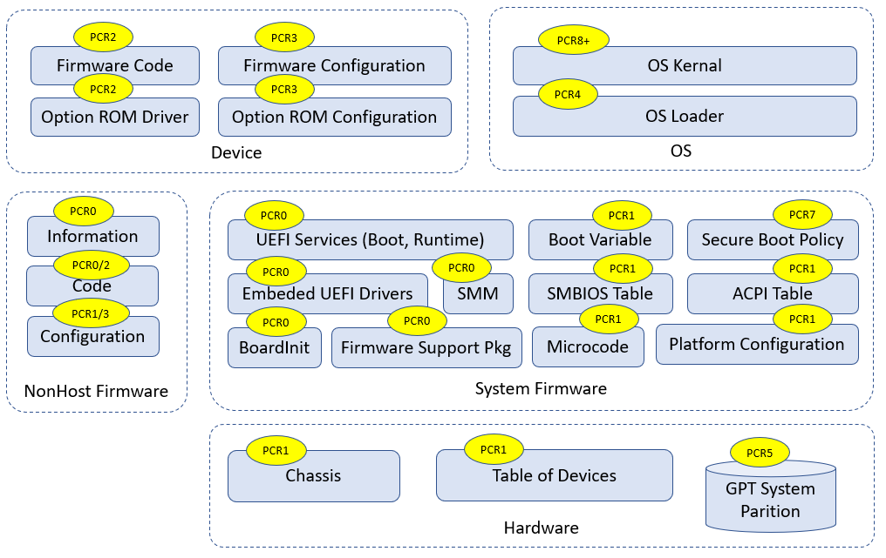
(See Building Secure Firmware by Jiewen Yao & Vincent Zimmer)
There is an easy way to remember Table 1, as described by the following two rules:
1) Even-numbered PCRs are for the code, while odd-numbered PCRs are for configuration data.
2) PCRs [0-1] are for the OEM, PCRs [2-3] are for third party usage, PCRs [4-5] are for OS boot, PCR[7] is for secure boot policy, PCR[6] is undefined by the PFP spec and is platform-specific.
Table 2 PCR usage (simple rules)
| Type | Code | Data Configuration |
|---|---|---|
| OEM | PCR[0] | PCR[1] |
| Third party | PCR[2] | PCR[3] |
| OS Boot | PCR[4] | PCR[5] |
| Secure Boot Policy | N/A | PCR[7] |
For example:
Any PEI, DXE, and SMM code in flash FV are OEM code. They go into PCR[0].
ACPI data from OEM code is important for boot. It goes into PCR[0].
An integrated PCI card option ROM in flash FV is provided by the OEM. It goes to PCR[0]. An external PCI card Option ROM is third party code. It goes into PCR[2].
If a non-host component or a device firmware can only be updated by OEM platform code, it goes into PCR[0]. If a non-host component or a device firmware can be updated by an entity other than the OEM platform code, it goes into PCR[2].
A CPU Microcode update can be treated as code or data. It can go into PCR[0] or PCR[1].
SMBIOS tables are OEM configuration data. They go into PCR[1].
Setup variable and policy configuration are OEM configuration data. They go into PCR[1].
UEFI Boot#### and BootOrder variable are OEM configuration data. They go into PCR[1].
If a non-host component or a device firmware configuration can only be updated by OEM platform code, it goes into PCR[1]. If a non-host component or a device firmware configuration can be updated by an entity other than OEM platform code, it goes into PCR[3].
If the action is to enter an OEM provided setup utility, it goes into PCR[1]. If the action is to enter a third party provided setup utility, it goes into PCR[3].
OS Loader is OS boot related code. It goes into PCR[4].
Boot Attempt action goes into PCR[4]. The ExitBootService action goes into PCR[5].
Disk geometry, such as a GUID partition table (GPT), is OS boot related configuration. It goes into PCR[5].
UEFI Secure Boot variables, such as the Platform Key (PK), Key Exchange Key (KEK), image signature database (db), and image forbidden signature database (dbx) are all related to secure boot policy. They go into PCR[7].
If the security configuration policy is boot security sensitive, it goes into PCR[7]. If it is NOT boot security sensitive, it goes into PCR[1].
Secure feature disabling, such as DMA protection disabling, is security sensitive. It goes into PCR[7].
Debug mode information is security sensitive. It goes into PCR[7].
Some other rules for the data that shall not be measured into PCR are as follows:
1) PCRs can only record statically configured, unchangeable data. A PCR cannot record data that are dynamic and changeable across the boot, such as system clock, fan speed, boot count, system reset reason, battery power, a nonce value, a pointer, etc.
For example:
The firmware must measure the PE COFF image before the relocation into different memory location.
The firmware must measure the ACPI table from flash prior to any modification. An ACPI table patch may apply different data settings based upon policy, such as ACPI version selection for a secondary system description table (SSDT), or different addresses, such as a non-volatile storage memory location for a differentiated system description table (DSDT).
The firmware must measure partial portions of the SMBIOS table because some SMBIOS tables may contain some automatically updated information, such as WakeupType, Voltage, ResetCount, or NominalSpeed.
2) A PCR can only record the class of information. A PCR cannot record the instance of specific information that may be used to unique identify a system, such as an asset tag, a serial number, etc.
For example:
- The firmware must measure partial portions of the SMBIOS tables because some SMBIOS table entries may contain the instance specific unique information, such as SerialNumber, UUID, AssetTag, PartNumber.
3) A PCR cannot record any privacy sensitive information.
All of the above PCR measurements need to be recorded into an event log which can be used to reproduce the PCR value. Besides that, the event log may include some NO_ACTION event types. This type means that the data are not required to be measured into PCR. The event log entry is intended to provide additional information to the event log consumer. For example:
Specification ID event -- It is to provide information to the consumer regarding which version of specification is implemented.
Reference Manifest event -- It is to provide NIST SP800-155 reference integrity manifest information, such as platform manufacturer ID, reference manifest GUID, etc.
Startup Locality event -- It is to record the locality from which the TPM2_Startup command was sent in cases where the Locality sending the TPM2_Startup command is Locality 3.
Most TCG TPM related code in EDK II is located at SecurityPkg. The Tcg2Pei module handles the PEI phase measurement. The Tcg2Dxe DXE driver handles the DXE phase measurement. The DxeTpm2MeasureBootLib library handles the PE image measurements and GPT measurement. All event type definition can be found at UefiTcgPlatform.h. Figure 3 below shows the high level flow of the modules.
Figure 3 High Level Module Flow
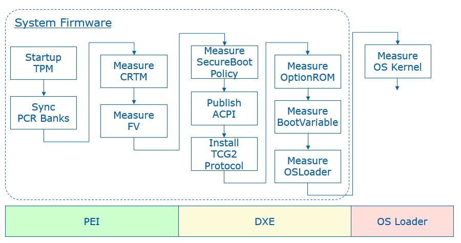
PCR 0
The SRTM's version identifier is measured by the Tcg2Pei.c MeasureCRTMVersion() function. The event type is EV_S_CRTM_VERSION. EDKII uses PcdFirmwareVersionString to let a platform pass the SRTM version information. The version string is encoded as a Unicode string with a NULL terminator.
The platform firmware is measured by the Tcg2Pei.c MeasureFvImage() function with firmware volume (FV) granularity. The event type is EV_EFI_PLATFORM_FIRMWARE_BLOB or EV_EFI_PLATFORM_FIRMWARE_BLOB2, based upon the PcdTcgPfpMeasurementRevision. The Tcg2Pei.c module measures the main BIOS at MeasureMainBios() and then installs a callback function FirmwareVolumeInfoPpiNotifyCallback() at the memory present entrypoint PeimEntryMP(). Whenever a new FV is installed, this callback is invoked and the new FV is measured.
To avoid duplicated measurements, the FirmwareVolumeInfoPpiNotifyCallback() will carefully check the new installed FV to ensure that the same FV will not be measured twice. It will also ensure that the child FV will not be measured.
The EFI_PEI_FIRMWARE_VOLUME_INFO_MEASUREMENT_EXCLUDED_PPI interface is designed to let a platform report to the Tcg2Pei module that the installed FV is already measured. There is no need to measure it again. This is usually done by a hardware based static root of trust for measurement, such as Intel Authenticated Code Module (ACM) in Intel Boot Guard technology. If the ACM has already measured the initial FV, such as PEI FV into the TPM PCR, then a BootGuard platform module can report this information. The Tcg2Pei.c MeasureFvImage() service will check this PPI in order to skip the measurement and event log report.
The EDKII_PEI_FIRMWARE_VOLUME_INFO_PREHASHED_FV_PPI service is designed to let a platform report the hash of an FV to the Tcg2Pei. This is also done by a hardware based root of trust module without measuring the FV. The ACM in Intel Boot Guard may just use this hash to verify the initial FV, such as PEI FV, but not measure the FV according to the policy. Then a BootGuard platform module can report this information. Because the hash value is stored in the Boot Guard boot policy manifest (BPM) and it is also verified by the ACM, the hash can be trusted. Tcg2Pei.c MeasureFvImage() will check this PPI to skip the hash calculation and directly measure the hash into PCR and also record the event log.
EDKII_PEI_FIRMWARE_VOLUME_INFO_STORED_HASH_FV_PPI is also designed to let a platform report the hash of an FV, but with a different purpose. The hash is reported to FvReportPei for FV verification, but not to the TcgPei for FV measurement. The intent is to let FvReportPei.c CheckStoredHashFv() verify the FV based upon the hash. The hash value is provisioned by the OEM in the Boot Guard BPM. The ACM will NOT verify the hash value against the corresponding FV, such as the DXE FV. Since the hash value storage is signed and verified by the ACM it can be trusted. Then the FvReportPei.c VerifyHashedFv() can verify the DXE FV based upon the hash information. Once VerifyHashedFv() passes the verification, it can install EDKII_PEI_FIRMWARE_VOLUME_INFO_PREHASHED_FV_PPI to Tcg2Pei.
Tcg2Pei is not the only module that measures data in the PEI phase. It also produces EDKII_TCG_PPI HashLogExtendEvent() API. As such, other module can also measure the data in the PEI phase by calling TpmMeasurementLib TpmMeasureAndLogData(). The PEI instance PeiTpmMeasurementLib uses the EDKII_TCG_PPI. Moreover, the TcgEventLogRecordLib provides more services, such as MeasureFirmwareBlob() and MeasureHandoffTable(). The TcgEventLogRecordLib.c can choose EV_EFI_PLATFORM_FIRMWARE_BLOB or EV_EFI_PLATFORM_FIRMWARE_BLOB2, and EV_EFI_HANDOFF_TABLES or EV_EFI_HANDOFF_TABLES2 based upon PcdTcgPfpMeasurementRevision.
Some platform firmware uses the Intel Firmware Supported Package (FSP) binary to initialize the silicon. The FSP contains the firmware code. As such, the FSP binary shall also be measured. The FSP-T and FSP-M are measured by FspmWrapperPeim. The FSP-S is measured by FspsWrapperPeim. They call FspMeasurementLib MeasureFspFirmwareBlob() and this function calls TcgEventLogRecordLib MeasureFirmwareBlob (). One special thing about FSP measurement is that the FSP binary includes not only code but also configuration. A platform may want to measure the FSP code to PCR0 and FSP static configuration to PCR1. In order to support that, FspMeasurementLib.c MeasureFspFirmwareBlob() refers the PcdFspMeasurementConfig to determine if it needs separate measurements by using MeasureFspFirmwareBlobWithCfg().
All measured firmware volumes are recorded in EFI_MEASURED_FV_HOB by the Tcg2Pei.c EndofPeiSignalNotifyCallBack() service in order to avoid duplicated measurements. If a firmware volume is NOT reported in the PEI phase, then it needs to be measured in the DXE phase. Similar to Tcg2Pei, the Tcg2Dxe produces EFI_TCG2_PROTOCOL HashLogExtendEvent() API. The DXE instance DxeTpmMeasurementLib uses the EFI_TCG2_PROTOCOL to let other modules measure more firmware data.
EDK II assumes that all OEM firmware volumes are reported in the PEI phase. As such, the firmware volume dispatched in the DXE phase is not measured at FV granularity, but instead the code is measured at PE image granularity in DxeTpm2MeasureBootLib. DxeTpm2MeasureBootLib is a hook to the EFI_SECURITY2_ARCH_PROTOCOL. It is linked with SecurityStubDxe and DxeSecurityManagementLib. When the DxeCore dispatches an EFI image, it calls EFI_SECURITY2_ARCH_PROTOCOL FileAuthentication(). Then DxeTpm2MeasureBootHandler() will be invoked finally. The general rule is that:
1) If a PE image driver or application is from an unmeasured FV, then the PE image will be measured. A PE image driver will be measured into PCR2 and a PE image application will be measured into PCR4.
2) If a PE image driver is from a measured FV, it will NOT be measured.
3) If a PE image application is from a measured FV, it will still be measured to PCR4.
This logic is in DxeTpm2MeasureBootLib.c DxeTpm2MeasureBootHandler(). We will discuss more about this process in the PCR2 section and PCR4 section, respectively.
If there is an additional executable binary loaded, this executable binary shall be measured. For example, the SMM Transfer Monitor (STM) image is measured in SmmStm.c LoadMonitor() with TXT_EVTYPE_STM_HASH.
ACPI tables should be measured before any data patches are applied. For example, the Tcg2Smm measures the TPM2 ACPI table in PublishTpm2() and TPM SSDT ACPI table in PublishAcpiTable(), before any data patches, such as PcdTpm2AcpiTableRev, PcdTpm2AcpiTableLaml, PcdTpm2AcpiTableLasa, PcdActiveTpmInterfaceType, PcdTcgPhysicalPresenceInterfaceVer, PcdTpm2CurrentIrqNum, PcdTpm2PossibleIrqNumBuf, etc.
A platform may include a non-host environment, such as the Intel Management Engine (ME). The non-host information shall be measured with EV_NONHOST_INFO by a platform specific module. If the non-host platform can only be updated by Platform Firmware, then the non-host code shall be measured with EV_NONHOST_CODE by a platform specific module.
A platform may report the SRTM contents with EV_S_CRTM_CONTENTS. For example, an Intel BootGuard enabled platform may report EV_S_CRTM_CONTENTS with the BootGuard ACM, Key Manifest (KM) and Boot Policy Manifest (BPM) information.
EV_SEPARATOR is used to draw a line between the pre-boot environment and entering a post-boot environment. Tcg2Dxe.c will use MeasureSeparatorEvent() to record EV_SEPARATOR with 0x00000000 for PCR0~6 in the OnReadyToBoot() function upon the first boot attempt. EV_SEPARATOR for PCR7 is handled earlier in MeasureSecureBootPolicy(). We will discuss this later in the PCR7 section.
If a system starts up with an error status, then an error EV_SEPARATOR shall be measured. Tcg2Pei.c PeimEntryMA() detects the error and uses MeasureSeparatorEventWithError() to record EV_SEPARATOR with 0x00000001 for PCR0~7. More details of TPM error handling will be discussed later.
PCR 1
A platform usually includes multiple CPU Microcode update files and put them all together into a microcode FV. At runtime, the CPU module will scan them one by one and only load the one matching the current CPU. A platform may choose to measure the whole Microcode FV or the individually-used Microcode, such as the one from EDKII_MICROCODE_PATCH_HOB or PcdCpuMicrocodePatchAddress. The current EDK II does not provide an example in the CPU module. A platform needs to perform such measurement based upon the platform policy.
SmbiosMeasurementDxe is an example of SMBIOS table measurement. We call it an example because the SMBIOS table measurement requires a platform specific policy to skip the dynamic changeable information and instance-specific unique information in the table or a field of the table. This SmbiosMeasurementDxe.c FilterSmbiosEntry() will skip all OEM type SMBIOS tables and zero the dynamic changeable information and instance specific unique information before the measurement. The policy - mSmbiosFilterStandardTableBlackList is hardcoded in the module. Once the SMBIOS is filtered, the MeasureSmbiosTable() function will choose the event type EV_EFI_HANDOFF_TABLES or EV_EFI_HANDOFF_TABLES2 based upon the PcdTcgPfpMeasurementRevision to measure the SMBIOS table. If a platform wants to use a different policy, it may implement another SmbiosMeasurementDxe module and not use this one.
The UEFI boot related variables, such as "Boot####" and "BootOrder." are measured by Tcg2Dxe.c ReadAndMeasureBootVariable(). The event type is EV_EFI_VARIABLE_BOOT. These variables are measured if they are present in MeasureAllBootVariables().
Other Setup variables or policy configurations are OEM specific data. They should be measured in an OEM specific module.
For a server platform where PcdTpmPlatformClass is TCG_PLATFORM_TYPE_SERVER, the multi-processor information (EFI_CPU_PHYSICAL_LOCATION) is measured by the module Tcg2Dxe.c MeasureHandoffTables(). The event type is EV_TABLE_OF_DEVICES. Other devices are not handled in Tcg2Dxe but may be handled in an OEM platform module.
If a platform has a setup utility which does not require an unconditional reset, then the platform shall measure "Entering ROM Based Setup" with EV_ACTION. This can be done in the platform utility.
A platform may include a non-host environment, such as the Intel Management Engine (ME). If the non-host platform can only be updated by the Platform Firmware, then the non-host configuration should be measured with EV_NONHOST_CONFIG by a platform specific module.
PCR 2
A third party UEFI driver, such as a PCI EFI option ROM, is measured by DxeTpm2MeasureBootLib.c Tcg2MeasurePeImage() in DxeTpm2MeasureBootHandler(). The event type for a UEFI boot services driver is EV_EFI_BOOT_SERVICES_DRIVER and the event type for a UEFI runtime services driver is EV_EFI_RUNTIME_SERVICES_DRIVER. If a UEFI driver resides in an unmeasured FV which is dispatched in the DXE phase, it is also measured with the same policy into PCR2.
A platform may include a non-host environment, such as Intel Management Engine (ME). If the non-host platform can be updated by entities other than the Platform Firmware, then the non-host code shall be measured with EV_NONHOST_CODE by a platform specific module.
A platform may include Secure Protocol and Data Model (SPDM) capable devices. The platform should use the GET_MEASUREMENT command to retrieve the device firmware measurement and measure the immutable ROM and mutable firmware with EV_EFI_SPDM_FIRMWARE_BLOB in TCG_DEVICE_SECURITY_EVENT_DATA. A prototype can be found at DeviceSecurityPkg SpdmDeviceMeasurement.c. For SPDM, we will discuss the topic in the last chapter.
PCR 3
If the option ROM or UEFI application has a setup utility which does not require an unconditional reset, then the platform shall measure "Entering ROM Based Setup" with EV_ACTION. This can be done in the utility.
A platform may include a non-host environment, such as the Intel Management Engine (ME). If the non-host platform can be updated by entities other than Platform Firmware, then the non-host configuration should be measured with EV_NONHOST_CONFIG by a platform specific module.
A platform may include SPDM capable devices. The platform should use the GET_MEASUREMENT command to retrieve the device firmware measurement and measure the hardware configuration and firmware configuration with EV_EFI_SPDM_FIRMWARE_CONFIG in TCG_DEVICE_SECURITY_EVENT_DATA.
PCR 4
A third party UEFI application, such as a UEFI shell utility, a standard OS loader or an OEM boot option, is measured by DxeTpm2MeasureBootLib.c Tcg2MeasurePeImage() in DxeTpm2MeasureBootHandler(). The event type is EV_EFI_BOOT_SERVICES_APPLICATION. If a UEFI application is an FV which is dispatched in the DXE phase, it is also measured to PCR4 irrespective of whether the FV is measured or unmeasured.
The boot attempt action is measured by Tcg2Dxe.c OnReadyToBoot(). Before invoking a boot option, it measures the action \"Calling EFI Application from Boot Option\". After the boot option returns, it measures the action \"Returning from EFI Application from Boot Option\".
PCR 5
When a system boots a boot option in a GUID-named partition of the disk, the GUID partition table (GPT) disk geometry needs to be measured. It is done by DxeTpm2MeasureBootLib.c Tcg2MeasureGptTable() in DxeTpm2MeasureBootHandler().
The ExitBootServices action is measured by Tcg2Dxe.c. If ExitBootServices succeeds, then OnExitBootServices() is invoked. If ExitBootServices fails, then OnExitBootServicesFailed() is invoked.
PCR 6
PCR6 is for OEM specific data. The open source EDK II implementation does not have any example to measure data to PCR6.
PCR 7
The UEFI secure boot related variables -- "SecureBoot", "PK", "KEK", "db", and "dbx" are unconditionally measured by Tcg2Dxe.c ReadAndMeasureSecureVariable(). The event type is EV_EFI_VARIABLE_DRIVER_CONFIG. If they are not present, a zero size UEFI variable entry will be measured. The "dbt" and "dbr" variables are conditionally measured only if they are present by the routine MeasureAllSecureVariables().
The UEFI secure boot variable update is measured in Variable RuntimeDxe. If any of the above secure boot related variables are updated, then Variable RuntimeDxe Measurement.c MeasureVariable() will measure the new data with EV_EFI_VARIABLE_DRIVER_CONFIG.
When UEFI secure boot is enabled, the DxeImageVerificationLib verifies the PE image signature based upon the EFI_SIGNATURE_DATA in the EFI_SIGNATURE_LIST of an image signature database. If an EFI_SIGNATURE_DATA is used to verify the image, then this EFI_SIGNATURE_DATA will be measured with EV_EFI_VARIABLE_AUTHORITY in DxeImageVerificationLib Measurement.c MeasureVariable().
If a platform uses some other secure boot technology, such as Intel BootGuard, then this secure boot policy and authority shall also be measured into PCR7.
If a platform provides a firmware debugger mode, then the platform shall measure "UEFI Debug Mode" string with EV_EFI_ACTION. This logic is done at Tcg2Dxe.c MeasureSecureBootPolicy(), based upon PcdFirmwareDebuggerInitialized.
Per Microsoft Windows requirements, a platform shall enable DMA protection. If the DMA protection is disabled or configured to a lower security state, then the platform shall measure the "DMA Protection Disabled" string with EV_EFI_ACTION. Because a platform controls the DMA protection enable/disable policy, a platform policy driver shall measure this event.
If a platform uses other secure sensitive and critical configuration, such as Intel Total Memory Encryption (TME) and System Management Mode (SMM) protection, then the action to disable those security critical configuration shall also be measured.
EV_SEPARATOR for PCR7 is handled in Tcg2Dxe.c MeasureSecureBootPolicy() when the UEFI variable is ready. It is just after MeasureAllSecureVariables(). It is earlier than the ReadyToBoot event signal. The reason is that the PCR7 EV_SEPARATOR measurement must be between secure boot policy configuration measurement and image verification authority measurement. There might be a case where we need to measure an UEFI image before the ReadyToBoot event. In such an example, the authority measurement happens before the ReadyToBoot event.
NO_ACTION event
TCG_EfiSpecIDEvent is used to describe the TCG FPF specification version. It is installed by the Tcg2Dxe SetupEventLog() function, based upon PcdTcgPfpMeasurementRevision.
TCG_Sp800_155_PlatformId_Event2 is usually installed by a platform TCG PEI or DXE module, such as Platform800155EventPei or Platform800155EventDxe. A platform TCG PEIM may use EFI_TCG_800_155_PLATFORM_ID_EVENT_HOB for this event and it will be converted by the Tcg2Dxe.c SetupEventLog() function.
TCG_EfiStartupLocalityEvent is usually installed by a platform module in the PEI phase, such as a BootGuard related PEIM or StartupLocalityEventPei. It shall use EFI_TPM2_STARTUP_LOCALITY_HOB for this event and it will be converted by Tcg2Dxe.c SetupEventLog() function. This NO_ACTION event is added when a BootGuard ACM starts up the TPM device.
Event Log
Tcg2Pei records the event log to a EFI_TCG_EVENT2_HOB. The HOB will be consumed by Tcg2Dxe and converted into a formal TCG event log.
There are two ways to expose a TCG event log. The first way is via the EFI_TCG2_PROTOCOL GetEventLog() API. This protocol is installed by the Tcg2Dxe module directly. Care must be taken that even after the OS calls GetEventLog() API, a platform firmware module may add additional event log entries, such as EV_EFI_ACTION event "Exit Boot Services Invocation". Once the GetEventLog() API is called, the additional event log is added to EFI_TCG2_FINAL_EVENTS_TABLE. This table is installed as a UEFI configuration table with EFI_TCG2_FINAL_EVENTS_TABLE_GUID.
The second way the expose the event log is via a TPM2 ACPI table as an optional feature. The TCG event log will be produced via PcdTpm2AcpiTableLaml and PcdTpm2AcpiTableLasa by Tcg2Dxe. Then Tcg2Smm consumes those two PCD and installs this ACPI table for the operating system.
Hardware Root of Trust
A platform may choose to use a dedicated hardware root of trust to verify the platform firmware, such as Intel Boot Guard Technology or AMD Platform Security Processor (PSP). If this mode is chosen, then there should be dedicated event logs for the related component.
For example, if Intel Boot Guard measured boot is enabled, then the platform shall record TCG_EfiStartupLocalityEvent and may report a EV_S_CRTM_CONTENTS event in PCR[0]. If Intel Boot Guard verified boot is enabled, then the secure boot policy and authority shall also be reported in PCR[7].
Trusted Boot Chain -- Putting it all together
Figure 4 shows a complete trusted boot chain that commences from a hardware root of trust module.
Figure 4 TCG Trusted Boot Flow
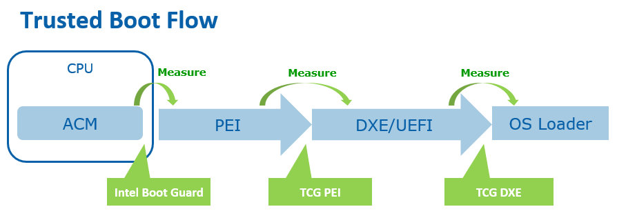
For test purposes, we have a UEFI shell tool Tcg2DumpLog to display the TCG event log. Because the event log records every step of the PCR extend, we can reproduce the PCR values by using the digests in the TCG event log.
If a developer does not have hardware, they can use a TPM2 simulator, such as Microsoft TPM2 simulator. Currently, EDK II Tpm2Emulator can be used to communicate with the Microsoft TPM2 simulator via a socket interface on ports 2321 and 2322. Then the developer can use the Tcg2DumpLog to dump the TCG event log in the EDK II emulator environment.
The whole TPM software stack (TSS) is out of scope of this document. There is prototype Tpm2TssPkg for reference only.
Remote Attestation
Remote attestation is a client/server process that helps you retrieve a quote from the TPM. A quote is process that provides a list of the current PCR values that are signed by the TPM.
A full remote attestation process includes two major steps:
The server verifies the client TPM device.
The server verifies the TCG event log from the client.
Figure 5 shows the TPM device verification flow.
1) Every TPM includes an Endorsement Key (EK) signed by a root EK which belongs to the TPM vendor. It also includes an Attestation Key (AK). The client sends the TPM EK and AK to a server.
2) The server verifies the EK based upon the TPM vendor root CA cert. The server generates a random secret and encrypts the secret and AK with the EK public key to be used as a challenge. Then the server sends the challenge to client.
3) The client decrypts the secret with the EK private key and check the AK. Then the client sends the secret back to server.
4) Now the server knows the client has a genuine TPM.
Figure 6 shows the event log verification.
1) The server asks the client platform for a quote.
2) The client platform asks the TPM to sign the PCR list with the AK private key as a quote. Then the client sends the quote to the server.
3) The server verifies the signature of the quote with the AK public key. Now the server knows the PCR list is genuine. If the verification succeeds, then the server sends a request to get an event log.
4) The client platform sends the event log directly to the server.
5) The server replays the event log to reproduce the PCR values. If they are same, then the server knows the TCG event log is genuine.
Figure 5 Remote Attestation TPM Device Verification
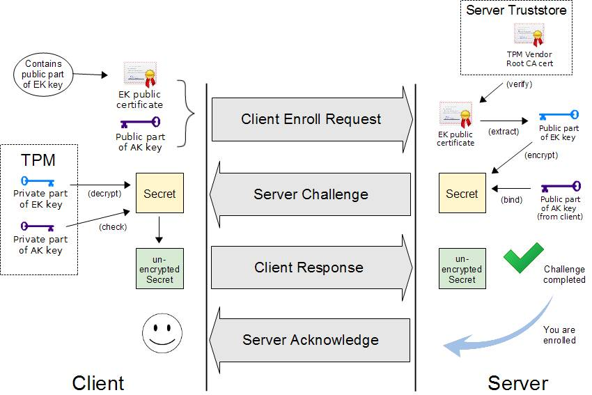
(Source: OpenPower TrustBoot)
Figure 6 Remote Attestation Event Log Verification
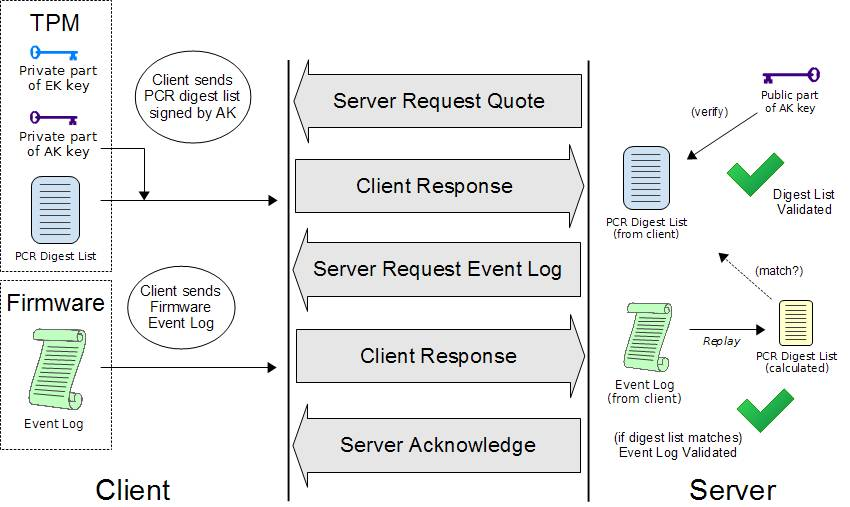
(Source: OpenPower TrustBoot)
Once the verifier in the server gets the event log, the verifier can compare it with the reference integrity measurement (RIM) based upon a predefine policy.
Figure 7 shows the final RIM validation process.
Figure 7 RIM Validation

(source: TCG FIM)
For test purposes, we created a sample FspManifestTool. It can be used to generate a SWID or CoSWID tag for an FSP binary as the reference integrity manifest (RIM). The FSP RIM can be used to verify the FSP binary based upon the TCG event log.
TPM Device Startup
The platform firmware needs to send a TPM Startup command to the TPM before measuring any data into a PCR register. TPM specification defines three shutdown/startup sequences:
- TPM Reset -- Tpm2Startup(CLEAR) after Tpm2Shutdown(CLEAR) or no shutdown command is sent.
All those values that are specified as having a default initialization state go back to their default initialization state. Persistent values that have no default initialization state are not changed.
- TPM Restart -- Tpm2Startup(CLEAR) after Tpm2Shutdown(STATE).
This preserves much of the previous state of the TPM, except the PCRs and the controls associated with the Platform hierarchy are all returned to their default initialization state.
- TPM Resume -- Tpm2Startup(STATE) after Tpm2Shutdown(STATE).
This preserves the previous state of the TPM, including the static Root of Trust for Measurement (S-RTM) PCR and the platform controls other than the PlatformHierarchyEnable.
Tpm2Startup(STATE) after Tpm2Shutdown(CLEAR) or no shutdown is an invalid sequence and will fail.
TPM startup is done in the Tcg2Pei.c PeimEntryMA() function. Tpm2Startup(TPM_SU_CLEAR) will be used if the system is in normal boot path, and Tpm2Startup(TPM_SU_STATE) will be used if the system is in the S3 resume path. The issuing of the Startup command is controlled by PcdTpm2InitializationPolicy because other modules may use the TPM and send a Startup command before Tcg2Pei. One example is TPM1.2/TPM2.0 detection in Tpm2ConfigPeim.c DetectTpmDevice(). The other example is TPM device startup in an Intel BootGuard ACM. If the TPM is started by a BootGuard ACM, then the platform needs to add a TCG_EfiStartupLocalityEvent to indicate that the startup locality is 3.
The platform firmware may send a TPM Shutdown command if a reset happens in the pre-OS environment. Tcg2Dxe.c registers a ShutdownTpmOnReset() callback function on the system reset event. Tpm2Shutdown(TPM_SU_CLEAR) will be used to shut down the TPM device.
The TPM measurements happen in both a normal boot path and a S4 resume. In an S3 resume, there is no need to measure the firmware components because the TPM state is restored in the S3 resume path. The assumption is that the OS shall issue a Tpm2Shutdown(TPM_SU_STATE) to save the TPM state. Then platform firmware uses Tpm2Startup(TPM_SU_STATE) to restore the state.
If the OS does not send Tpm2Shutdown() or sends TpmShutdown(TPM_SU_CLEAR), then the Tpm2Startup(TPM_SU_STATE) will fail. Then Tcg2Pei.c will start error handling and use Tpm2Startup(TPM_SU_CLEAR) to start up TPM again. If the TPM can be started, then Tcg2Pei.c will call MeasureSeparatorEventWithError() to record EV_SEPARATOR with 0x00000001 for PCR0~7. This action is required to cap the PCR's to an invalid state in order to resist the PCR forgery attack.
TPM Device Selection
A platform TPM can be implemented in different ways, such as a discrete TPM2.0 (dTPM) with either a Serial Peripheral Interface (SPI) or Inter-Integrated Circuit (I2C) bus, a firmware TPM2.0 (fTPM), or even a legacy TPM1.2 device. A platform needs to select the TPM device at build time or at runtime.
TPM_DEVICE_SELECTED_GUID PPI is an interface that indicates that the platform has selected the TPM device. Tcg2Pei can run to start the TPM. If Tcg2Pei starts the TPM successfully, it will install PEI_TPM_INITIALIZED_PPI to tell other module that the TPM is initialized and ready to use. No matter whether TPM startup succeeds or fails, Tcg2Pei always installs PEI_TPM_INITIALIZATION_DONE_PPI to tell other modules that the TPM initialization process is done. Other modules can locate PEI_TPM_INITIALIZED_PPI to know if it has succeeded or failed.
Tcg2Config TpmDetection.c provides a sample implementation to detect a TPM1.2 or TPM2.0. Besides installing TPM_DEVICE_SELECTED_GUID PPI, it also sets TPM_DEVICE_INTERFACE_TPM20_DTPM to PcdTpmInstanceGuid, which is checked by Tcg2Smm to ensure that only a discrete TPM 2.0 can be supported by Tcg2Smm.
A platform may also install the TPM_DEVICE_SELECTED_GUID PPI and set PcdTpmInstanceGuid directly if the configuration is fixed.
TPM Device Interface
The main TPM specification defines the TPM commands. In EDK II, the TPM commands are defined in Tpm20.h.
A TPM hardware device may support the First-In-First-Out (FIFO) interface or Command Response Buffer (CRB). The FIFO interface defines a set of data input/output IO registers for the TPM commands. The CRB interface defines a chunk of DMA memory buffer for the TPM commands. In EDK II, both the TPM FIFO and CRB interfaces are described in TpmPtp.h,
EDKII TCG drivers are TPM interface agnostic. They just send commands via Tpm2CommandLib. The Tpm2CommandLib implementation is also TPM interface agnostic and sends command to Tpm2DeviceLib. The Tpm2DeviceLib abstracts how to send a TPM command. For example, Tpm2DeviceLibTcg2 is the instance to send a TPM command via EFI_TCG2_PROTOCOL.SubmitCommand(). Tpm2DeviceLibDTpm is the instance to send a TPM command to the hardware via FIFO or CRB.
Tpm2DeviceLibDTpm.c detects the TPM device interface type in Tpm2GetPtpInterface(). It checks the FIFO and CRB register to know the device interface. Then this function sets the PcdActiveTpmInterfaceType. Then
Tpm2DeviceLibDTpm.c detects the TPM device interface type in Tpm2GetPtpInterface(). It checks the FIFO and CRB register to know the device interface. Then this function sets the PcdActiveTpmInterfaceType.
Tpm2DeviceLibDTpm sends a TPM command in Tpm2Ptp.c DTpm2SubmitCommand(). It checks PcdActiveTpmInterfaceType and calls Tpm2Tis.c Tpm2TisTpmCommand() for the FIFO interface or Tpm2Ptp.c PtpCrbTpmCommand() for the CRB interface.
Figure 8 shows the TCG trusted boot component in EDK II.
Figure 8 TCG Trusted Boot Component in EDK II
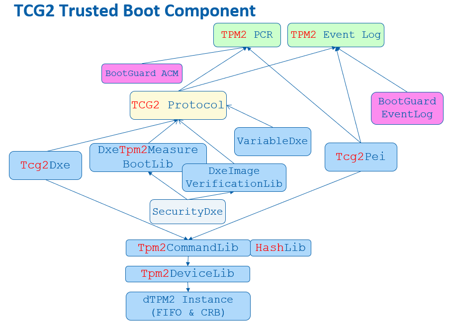
Error Handling
TPM errors may happen at any time. According to the TCG specification, capping PCR is always required. If the PCR cannot be capped, the platform SHOULD take any necessary action to notify the host platform's administrator, user, and operator of this situation and transition to a "fail-safe" mode by performing one of these actions:
Make the TPM interface inaccessible via hardware for the remainder of the power cycle
Reboot the Host Platform
Disable the Host Platform
Perform a vendor-specific action that is equivalent to one of the options above.
When a TPM returns an error, Tcg2Pei.c will create a EFI_TPM_ERROR HOB and report the error status code via REPORT_STATUS_CODE() with PcdStatusCodeSubClassTpmDevice.
Tcg2Dxe.c will detect the EFI_TPM_ERROR HOB and not install EFI_TCG2_PROTOCOL if there is a TPM error. If the TPM error happens after the EFI_TCG2_PROTOCOL installation, Tcg2Dxe.c will set the EFI_TCG2_BOOT_SERVICE_CAPABILITY.TPMPresentFlag to be FALSE. At this point the OS will know the TPM is absent. Similar to Tcg2Pei.c, Tcg2Dxe.c also reports the error status code via REPORT_STATUS_CODE().
A platform module may register a ReportStatusCode callback handler to process the TPM error, such as reset system, or disable the TPM hardware.
TCG Physical Presence
TCG Physical Presence (PP) interface is a way to let an OS send a request to configure the TPM device, such as Clear, SetPCRBanks, ChangeEPS, Enable, Disable, DisableEndorsementEnableStorageHierarchy. TcgPhysicalPresence.h lists all TCG PP operation defined by the TCG PP specification.
EDK II defines a Tcg2PhysicalPresenceLib to abstract the TCG PP functions. It has three instances - PeiTcg2PhysicalPresenceLib, DxeTcg2PhysicalPresenceLib, and SmmTcg2PhysicalPresenceLib. The TCG PP related ACPI code is at Tpm.asl of the Tcg2Smm driver.
During boot, Tcg2Smm.c PublishAcpiTable() allocates the non-volatile storage ACPI OpRegion
- mTcgNvs for ASL/SMM communication. At runtime, the OS locates the TPM device - Name(CID, \"MSFT0101\") and calls the _DSM() method. The first parameter is a UUID. The value (3dddfaa6-361b-4eb4-a424-8d10089d1653) means the function call is TCG PP request. Finally, the TPPI() method fills the parameter in the OperationRegion(TNVS) and triggers the SMI - Store(PPIN, IOPN).
Then Tcg2Smm.c PhysicalPresenceCallback() will be triggered to handle such a PP request. It checks the parameters and calls the corresponding function in SmmTcg2PhysicalPresenceLib. EDK II defines two PP variables:
Tcg2PhysicalPresence variable. It is a read/write variable because anyone can send the PP request. The data structure is EFI_TCG2_PHYSICAL_PRESENCE. This variable is to record the TCG PP request, request parameter, and finally, the response result.
Tcg2PhysicalPresenceFlags variable. It is a read-only variable to prevent modification from malicious software. The data structure is EFI_TCG2_PHYSICAL_PRESENCE_FLAGS. This variable is to record the TCG management flags. The flags are defined in Tcg2PhysicalPresenceLib, such as TCG2_BIOS_TPM_MANAGEMENT_FLAG_xxx, TCG2_BIOS_INFORMATION_FLAG_xxx, TCG2_BIOS_STORAGE_MANAGEMENT_FLAG_xxx.
If the OS submits a TPM configuration change request, then this request is saved in the Tcg2PhysicalPresence variable.
Upon the next boot, a PlatformBds module, such as BoardBdsHookLib, needs to process the TCG PP request. ProcessTcgPp() needs to check Tcg2PhysicalPresenceLibNeedUserConfirm(), connect the platform specific trusted console if user confirmation is required, and then call Tcg2PhysicalPresenceLibProcessRequest().
DxeTcg2PhysicalPresenceLib.c implements the Tcg2PhysicalPresenceLibProcessRequest(). It calls VariableLockProtocol->RequestToLock() to lock the Tcg2PhysicalPresenceFlags variable, reads Tcg2PhysicalPresence variable, and then calls Tcg2ExecutePendingTpmRequest() to process the request. If user confirmation is required, then Tcg2UserConfirm() is called. Once the configuration is confirmed, the TPM is configured in Tcg2ExecutePhysicalPresence(), such as Clear, SetPCRBanks, ChangeEPS, LogAllDigests. After configuration, Tcg2ExecutePendingTpmRequest() then records the new configuration in Tcg2PhysicalPresenceFlags variable and the PP result in Tcg2PhysicalPresence variable. Finally, this function will reset the system in order to make the new settings take effect.
Please be aware that Tcg2PhysicalPresenceLibProcessRequest() shall be called before EndOfDxe event because the read-only Tcg2PhysicalPresenceFlags variable can only be updated before EndOfDxe.
Once the PP request is processed, the OS may use ACPI _DSM() method again to get the result. Tcg2Smm.c PhysicalPresenceCallback() will return the result from Tcg2PhysicalPresence variable.
TPM Bank Selection
A TPM device may have multiple banks of PCRs. A PCR bank is a collection of PCRs that are extended with the same hash algorithm. PCR banks are identified by the hash algorithm used to extend the PCR in that bank.
The PP operation TCG2_PHYSICAL_PRESENCE_SET_PCR_BANKS can be used to configure the active PCR banks.
Besides the PP request, the OS may use EFI_TCG2_PROTOCOL for TPM active bank management as well. GetActivePcrBanks() returns the current active banks. SetActivePcrBanks() is used to set the new PCR banks request. It does not take effect immediately, but just saves a request. The new PCR bank setting request will be processed in the next boot. GetResultOfSetActivePcrBanks() is used to get the new PCR banks setting result.
EDK II Tcg2Dxe.c just uses the same Tcg2PhysicalPresence variable for the implementation. Later DxeTcg2PhysicalPresenceLib.c calls Tcg2ExecutePhysicalPresence() and then Tpm2GetCapabilitySupportedAndActivePcrs() in order to get the current supported PCR banks and compares them. If one of the new PCR banks is not supported, then the request will be rejected. Otherwise, this function calls Tpm2PcrAllocateBanks() to set the new banks and then reset the system.
Care must be taken that the final active PCR banks value is based upon multiple criteria:
1) TPM supported PCR banks - It can be retrieved from Tpm2GetCapabilitySupportedAndActivePcrs(&TpmHashAlgorithmBitmap).
2) TPM end user desired current active PCR banks -- It can also be retrieved from Tpm2GetCapabilitySupportedAndActivePcrs(&TpmActivePcrBanks).
3) The OEM configuration supported active PCR banks -- the OEM may select a subset of hash algorithms. It is recorded in PcdTpm2HashMask.
4) The platform firmware software capability -- the OEM may select a subset of hash algorithms. It is recorded in PcdTcg2HashAlgorithmBitmap.
The final effective PCR banks is a subset of all of them. For example, take a TPM that supports SHA256|SHA384|SM3_256. The end user desired active PCR bank is SHA256. The supported active PCR banks is SHA256|SHA384. The platform firmware software capability is SHA256|SHA384. Then the final effective PCR banks is SHA256 only.
Tcg2Pei.c SyncPcrAllocationsAndPcrMask() function is used to synchronize the settings. This includes ensuring that the TPM has appropriate hardware capability (TpmHashAlgorithmBitmap), the current active PCR banks (TpmActivePcrBanks), and the supported active PCR banks (PcdTpm2HashMask). These all need to be in agreement.
If there is a bank in TpmActivePcrBanks that is not described in PcdTpm2HashMask, then it means that the OEM does not want to enable this bank. SyncPcrAllocationsAndPcrMask() will call Tpm2PcrAllocateBanks() to remove the bank from the active PCR banks and reset the system.
If there is a bank in PcdTpm2HashMask but not supported in the TpmHashAlgorithmBitmap, that means the OEM configured an invalid bank. SyncPcrAllocationsAndPcrMask() will update PcdTpm2HashMask.
PcdTpm2HashMask serves as an indicator of the supported active PCR banks. It will be used to guide PcdTcg2HashAlgorithmBitmap generation and during the hash algorithm registration in HashLibBaseCryptoRouter. A platform may register multiple hash algorithms, such as HashInstanceLibSha256, HashInstanceLibSha384, HashInstanceLibSha512 and HashInstanceLibSm3. If a hash algorithm is not indicated in PcdTpm2HashMask, this hash algorithm will not be registered successfully. The final registered hash algorithms value is a subset of PcdTpm2HashMask and is recorded in PcdTcg2HashAlgorithmBitmap.
Figure 9 shows the TPM bank selection in EDK II.
Figure 9 TPM Bank Selection in EDK II
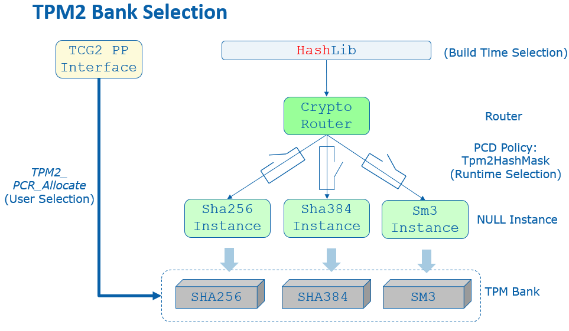
In brief, we have below result:
PcdTpm2HashMask (supported active PCR banks) must be a subset of TpmHashAlgorithmBitmap (TPM capability).
TpmActivePcrBanks (end user desired active PCR banks) must be a subset of PcdTpm2HashMask.
PcdTcg2HashAlgorithmBitmap (platform firmware capability) must be a subset of PcdTpm2HashMask.
PcdTcg2HashAlgorithmBitmap serves as an indicator of the firmware hash algorithm capability. Tcg2Dxe.c needs to report the capability to the OS with the following values:
EFI_TCG2_BOOT_SERVICE_CAPABILITY.HashAlgorithmBitmap shall be the (TpmHashAlgorithmBitmap & PcdGet32 (PcdTcg2HashAlgorithmBitmap))
EFI_TCG2_BOOT_SERVICE_CAPABILITY.ActivePcrBanks shall be the (TpmActivePcrBanks & PcdGet32 (PcdTcg2HashAlgorithmBitmap))
In the above example, we have following configuration:
TpmHashAlgorithmBitmap is SHA256|SHA384|SM3_256.
PcdTpm2HashMask is SHA256|SHA384.
TpmActivePcrBanks is SHA256.
PcdTcg2HashAlgorithmBitmap is SHA256|SHA384.
The final report is:
EFI_TCG2_BOOT_SERVICE_CAPABILITY.HashAlgorithmBitmap is SHA256|SHA384.
Then the end user may have chance to enable SHA384 for the platform.
TPM Hierarchy Management
TPM has three hierarchies -- platform hierarchy, storage hierarchy and endorsement hierarchy.
The platform hierarchy is managed by the platform firmware. Before booting to the OS, the platform firmware shall randomize the platform hierarchy auth value in order to prevent another entity from accessing the platform hierarchy.
A sample implementation of this randomization can be found in the Tcg2Platform module in EDK II platform repository. In a normal boot path, Tcg2PlatformDxe.c calls ConfigureTpmPlatformHierarchy() in TpmPlatformHierarchyLib.c to randomize the platform auth value in EndOfDxe event. Once the Tpm2HierarchyChangeAuth() command is sent to the TPM, no one else can use the platform hierarchy without knowing the random number. In the S3 resume path, there is no need to randomize the platform auth value again if the Tcg2Pei resumes TPM successfully. However, if a TPM resume fails and Tcg2Pei needs to restart the TPM, then Tcg2PlatformPei.c RandomizePlatformAuth() is called to randomize the platform auth value in the EndOfPei event PlatformInitEndOfPei() before the platform firmware resumes to the OS.
The OS manages the storage hierarchy, which is independent of the platform hierarchy. The OS may ask the platform auth to clear the TPM via TCG PP operation TCG2_PHYSICAL_PRESENCE_CLEAR. Later DxeTcg2PhysicalPresenceLib.c calls Tcg2ExecutePhysicalPresence() then Tpm2CommandClear() to clear the TPM.
Other PP operations such as TCG2_PHYSICAL_PRESENCE_ENABLE, TCG2_PHYSICAL_PRESENCE_DISABLE, TCG2_PHYSICAL_PRESENCE_DISABLE_ENDORSEMENT_ENABLE_STORAGE_HIERARCHY can be used to enable or disable the storage hierarchy or the endorsement hierarchy. These are optional features. If they are implemented, then Tcg2Pei needs to call the Tcg2PhysicalPresenceLibGetManagementFlags() function from PeiTcg2PhysicalPresenceLib, check TCG2_BIOS_INFORMATION_FLAG_HIERARCHY_CONTROL_xxx flags in Tcg2PhysicalPresenceLib and send Tpm2HierarchyControl() command to enable or disable the hierarchy.
TCG PP Interface not only controls TPM configuration, but it also controls the TCG storage configuration, such as BlockSid. We will discuss that in TCG storage section.
TCG PP interface also supports vendor specific extensions. EDK II defines Tcg2PpVendorLib to serve that purpose.
Figure 10 shows TCG PP component in EDK II.
Figure 10 TCG PP Component in EDK II
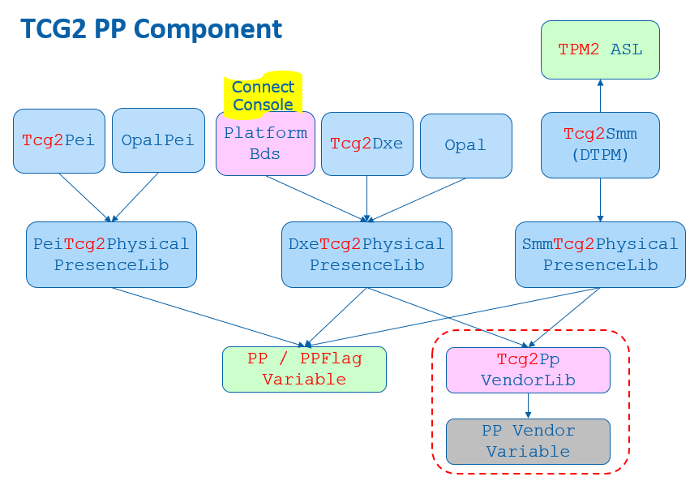
TCG Memory Overwrite (MOR)
The memory overwrite (MOR) feature is to mitigate the platform reset attack. It is not related to the TPM hardware but is a pure software feature.
The TCG Platform Reset Mitigation specification defines two UEFI variables:
MemoryOverwriteRequestControl variable (MOR variable). It is a read/write variable. This variable is to record the TCG MOR request state.
MemoryOverwriteRequestControlLock variable (MorLock variable). It is lockable in some situations to prevent modification from malicious software. This variable is to control the lock state of MemoryOverwriteRequestControl variable and itself. It can be accessed with a UEFI variable service -- SetVariable()/GetVariable(). But it is not a normal UEFI variable because it cannot be stored on flash region even though it has the NON_VOLATILE attribute. It is more like a virtual variable.
A platform memory initialization module shall check the MemoryOverwriteRequestControl variable. If this variable is not present or this variable indicates a MOR request, then the memory initialization module shall clear the memory after enabling the memory controller. For example, the QuarkPlatformMemoryInit module InstallEfiMemory() function checks the MOR variable and zeros all system memory before installing it if MOR_CLEAR_MEMORY_VALUE() is TRUE. Another example is the Kabylake openboard FspmPolicyWrapper PeiFspMiscUpdUpdatePreMem() function that checks the MOR variable and sets the CleanMemory policy data if MOR_CLEAR_MEMORY_BIT_MASK is set.
The MOR variable is managed by the MemoryOverwriteControl module. The MOR variable is created at TcgMor.c entrypoint MorDriverEntryPoint(), and the variables is cleared at the ReadyToBoot event OnReadyToBoot().
Because the MOR variable is read/write, a malicious software entity may just clear the MOR request even if a high privileged software requests the MOR. We need a secure MOR solution to prevent such an attack. The MorLock variable was introduced to protect the MOR variable. The first version of MorLock is simple. Once the MorLock is set, no one can unlock MOR until the next boot. It is secure, but it brings performance overhead for a system reset. People have to wait a long time for the platform memory module cleaning all system memory, especially on a server platform with large memory. The second MorLock supports unlock. The MorLock caller can set MorLock with an 8 byte secret key. If the caller sets MorLock with the same 8 bytes secret key, it means unlock MOR. In order to prevent secret key guessing, any wrong secret key will cause the MorLock to become unlockable in the current boot.
Because the variable driver must save a secret key, the variable driver shall:
1) execute in a secure execution environment, such as system management mode (SMM).
2) not store the secret key content to a non-volatile storage, such as an SPI flash region.
The MorLock variable is managed by the EDKII VariableRuntimeDxe driver TcgMorLockSmm.c. SetVariableCheckHandlerMorLock() function follows the specification to handle both secure MOR version 1 (lock without key) and version 2 (lock with key).
Figure 11 shows the high level TCG MOR Flow.
Figure 11 TCG MOR Flow
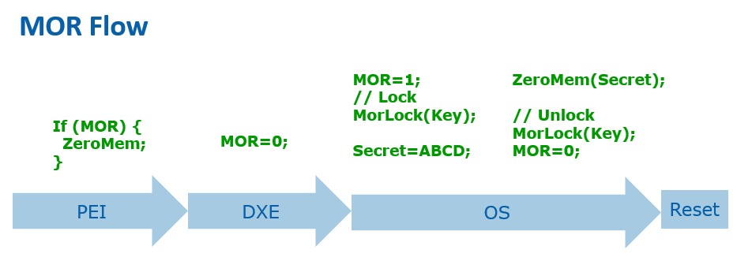
The MOR variable not only control memory overwrite but also control the storage device TPer reset. We will discuss that in TCG storage section.
Previous MOR specifications also defined an ACPI interface. The OS may set MOR state by using an ACPI _DSM method. This interface is deprecated because it does not support secure MOR. Figure 12 shows TCG MOR component in EDK II.
Figure 12 TCG MOR Component in EDK II
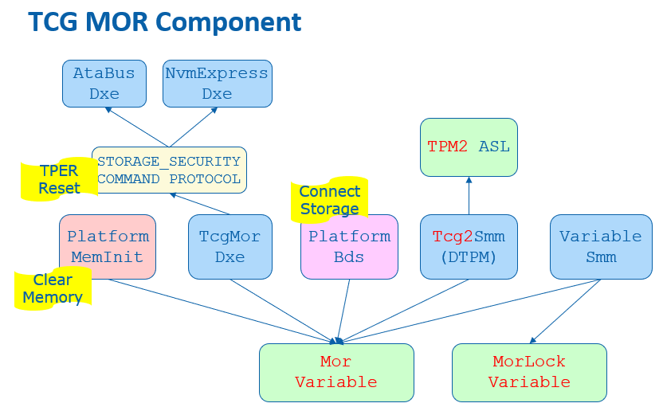
OS Interface
A platform firmware shall report the TPM device to an OS. The report should include 1) ACPI table, 2) EFI_TCG2_PROTOCOL.
ACPI Table
A TPM capable system shall report two ACPI tables.
1) TPM2 ACPI table -- This is a static table to report the TPM device control area and TCG event log.
2) TPM SSDT ACPI table -- This is the ACPI language to declare the TPM device, describe the hardware resources, such as interrupt information, and provide the device specific method _DSM(), such as TCG Physical Presence (PP) operation.
Tcg2Smm installs TPM2 ACPI table in PublishTpm2(). It uses the below PCDs to patch the table.
PcdTpm2AcpiTableRev - This is to indicate TPM2 ACPI table version: version 3 or version 4.
PcdTpmPlatformClass - This is to indicate the platform type: client or server.
PcdTpm2AcpiTableLaml/PcdTpm2AcpiTableLasa -- This is for TCG event log area. Only version 4 table includes the TCG event log field.
PcdActiveTpmInterfaceType -- These are for the TPM device interface: Tpm2PtpInterfaceCrb or Tpm2PtpInterfaceFifo. Only Tpm2PtpInterfaceCrb interface requires StartMethod and AddressOfControlArea.
PcdTpmBaseAddress -- This is for TPM device base address.
PcdAcpiDefaultOemId, PcdAcpiDefaultOemTableId, PcdAcpiDefaultOemRevision, PcdAcpiDefaultCreatorId, PcdAcpiDefaultCreatorRevision -- These are for the common ACPI header.
Tcg2Smm installs the TPM SSDT ACPI table in PublishAcpiTable(). It uses the below PCDs to patch the table.
PcdTcgPhysicalPresenceInterfaceVer -- This is to indicate the TCG Physical Presence Interface version.
PcdTpm2CurrentIrqNum, PcdTpm2PossibleIrqNumBuf -- This is to indicate the TPM IRQ information.
PcdAcpiDefaultOemId -- This is for the common ACPI header. The OemTableId and OemRevision should not be patched because they are defined at build time -- 'TPM2Tabl'. The CreatorId and CreatorRevision should not be patched because the ASL compiler fills in those values.
Tcg2Smm patches the TNVS ACPI OperationRegion with an ACPInvs memory address in AssignOpRegion(). The TNVS is used as a runtime communication buffer between ASL and the SMI handler PhysicalPresenceCallback() for the TCG PP request.
Tcg2Smm patches _HID to indicate a TPM device to the OS in UpdateHID(). Tcg2Smm should get the TPM vendorID from the Tpm2GetCapabilityManufactureID(), then translate the TPM vendorID to the ACPI defined PNPID and update the _HID name string. In a case that a company only registered a TPM vendorID but not an ACPI PNPID, the translation fails. The _CID("MSFT0101") should be used as _HID.
TCG2_PROTOCOL
EFI_TCG2_PROTOCOL is to provide a TCG services to an OS loader. It is a boot service protocol. It cannot be used after the ExitBootServices event.
Tcg2Dxe installs the EFI_TCG2_PROTOCOL and provides the below services:
GetCapability() -- This is to return capability information and state information, such as HashAlgorithmBitmap, SupportedEventLogs, TPMPresentFlag, NumberOfPCRBanks, ActivePcrBanks, etc.
GetEventLog() -- This is to return the TCG event log.
HashLogExtendEvent() -- This is to provide a service to extend data and log events. It has a flag to measure a PE image directly.
SubmitCommand() -- This is to submit a TPM command.
GetActivePcrBanks() -- This is to get the active PCR banks.
SetActivePcrBanks() -- This is to set the active PCR banks. It will not take effect until the next reboot.
GetResultOfSetActivePcrBanks() -- This is to return the result of the last SetActivePcrBanks().
TCG Storage
The TCG not only defines the TPM device, but it also defines storage devices, such as OPAL, Opalite, Pyrite, and Ruby.
EDK II TcgStorageCoreLib provides interfaces for TCG storage, including the lowest level TCG data encoding, such as TcgStartComPacket(), TcgEndComPacket(), TcgStartPacket(), TcgEndPacket(), TcgStartSubPacket(), TcgEndSubPacket(), TcgAddUINT8(), TcgAddUINT64(), TcgAddBOOLEAN(), TcgAddTcgUid(), etc.
EDK II TcgStorageOpalLib provides interfaces for TCG OPAL commands, such as OpalStartSession(), OpalEndSession(), OpalPsidRevert(), OpalGetMsid(), OpalSetPassword(), OpalBlockSid(), etc.
EFI_STORAGE_SECURITY_COMMAND_PROTOCOL is used to send a storage security command to a secure storage device.
The EDK II OpalPassword driver handles all TCG storage features, such as OPAL device password management and BlockSid.
OPAL Password
The OPAL password feature is designed to replace the Hard Disk Drive (HDD) password in the Advanced Technology Attachment (ATA) specification. It lets a user set a password for the disk during provisioning and requests the same password during every subsequent boot to unlock the disk.
The EDK II OpalPassword driver provides a setup user interface (UI) to let a user to input a password to unlock the disk. At the driver entrypoint, OpalDriver.c EfiDriverEntryPoint() installs the DriverBinding protocol and calls HiiInstall() to install the setup form. Whenever there is an storage device discovered, OpalEfiDriverBindingSupported() will check if the device supports EFI_STORAGE_SECURITY_COMMAND_PROTOCOL. If supported, then OpalEfiDriverBindingStart() calls OpalDiskInitialize() to initialize the device, such as getting manufactured SID (MSID) and data removal mechanism information. Then OpalEfiDriverBindingStart() calls OpalDriverRequestPassword() to unlock the disk.
If the disk locking feature is not set, then there is no need to ask the user to input a password. The function just returns.
If the disk locking feature is set, the disk will be in the locked state. A password dialogue box will be pop up to ask user to input the password. Then OpalDriverRequestPassword() calls OpalUtilUpdateGlobalLockingRange() to try unlocking. If the disk is unlocked, then the password is correct. It will be used for auto-unlocking in S3 resume (we will discuss that later). If unlocking fails, then the user will be asked to input the password again. The maximum retry count is 5 times. After that, the system will shut down.
A system level cold reset causes disk device power off, in which case the disk is locked. However, a warm reset may keep the disk device power on, which cause the disk remaining in the unlocked state after reset. In this condition, the OpalPassword driver still need to get the password from the end user for auto-unlocking in S3 resume. As such, OpalDriverRequestPassword() calls OpalUtilUpdateGlobalLockingRange() to try locking the device. If the user does not input the original password, the action will not success. Once the disk is locked, then the password is correct. OpalUtilUpdateGlobalLockingRange() is called again to unlock the disk.
Sometimes, the platform may want to skip the OPAL password prompt. It can be controlled by PcdSkipOpalPasswordPrompt. An end user may also choose to skip the password input by using 'ESC'. In this password skip scenario, if the device is in the locked state, the device will be kept in the locked state and continue booting. If the device is unlocked, the system will be forced to shut down in order to lock the device again.
OPAL disk auto-unlocking in S3 resume is a necessary feature because there is no UI available in the S3 resume path to let an end user input anything. What we need is to let the DXE OPAL driver save the password to a secure place with confidentiality guarantee, and then another S3 resume OPAL driver can get the password and unlock the OPAL device. The system management RAM (SMRAM) is a natural place to save the password secret. There are two possible ways to achieve this:
We can have an SMM OPAL password driver. The DXE OPAL driver passes the password to the SMM OPAL driver on a normal boot. Then the PEI S3 script uses a software system management interrupt (SMI) invokes the SMM OPAL driver to unlock the device.
We can have a PEI OPAL password driver. The DXE OPAL driver saves the password to a LockBox with a confidentiality attribute. The password won't be exposed by an OS and it can only be retrieved in PEI S3 code. Each LockBox can be uniquely identified by a GUID. As such, the PEI OPAL driver gets the password from the same LockBox during the S3 resume and unlocks the device.
In the first version, we choose the SMM OPAL password solution. However, we ran into complicated Direct Memory Access (DMA) protection issues because it is complicated to enable I/O Memory Management Unit (IOMMU) for device DMA protection inside of SMM. So now we choose the PEI OPAL password solution. In a normal boot path, at EndOfDxe event OpalEndOfDxeEventNotify(), the OpalDriver.c BuildOpalDeviceInfo() routine collects all OPAL device and password information and saves this to the OpalDevice LockBox and S3InitDevice LockBox via SaveLockBox() and sets the confidentiality attribute via SetLockBoxAttributes(LOCK_BOX_ATTRIBUTE_RESTORE_IN_S3_ONLY). The OPAL password unlock must happen before EndOfDxe event because the LockBox services are closed after EndOfDxe.
In the S3 resume path, OpalPasswordPei.c entry point OpalPasswordPeiInit() installs the EDKII_PEI_STORAGE_SECURITY_CMD_PPI. Whenever there is a disk driver installed, the OpalPasswordStorageSecurityPpiNotify() callback function is invoked. Then UnlockOpalPasswordDevices() gets the LockBox information via RestoreLockBox() and calls UnlockOpalPassword() to unlock the device one by one.
OPAL Features
An end user may want to update the OPAL password for a device. Usually, an end user can go to the BIOS setup page to perform that action and the new password will take effect immediately. However, that is not feasible in the OpalPassword driver. Because the setup page is launched after EndOfDxe event, there is no chance to save the new password for auto-unlocking. As such, the OpalPassword driver only allows the user to send a request and then reset the system. The OPAL password update request will be served in the next boot. After the disk is unlocked, the OpalDriver.c OpalEfiDriverBindingStart() routine calls ProcessOpalRequest().
Besides the password update, the OpalPassword driver supports an additional set of requests, such as:
ProcessOpalRequestSetAdminPwd() -- Set admin password. The old admin password is required here.
ProcessOpalRequestSetUserPwd() -- Set user password. The old user password is required here.
ProcessOpalRequestSecureErase() -- Secure erase user data on the disk. An admin or user password is required here.
ProcessOpalRequestRevert() -- Admin based revert to factory default. The admin password and manufactured SID (MSID) is required here. MSID can be read via OpalUtilGetMsid(). The admin can choose to keep the user data or destroy it.
ProcessOpalRequestPsidRevert() -- Physical Presence SID (PSID) based revert to factory default. PSID is a 32-character case sensitive value that is shipped with the disk.
ProcessOpalRequestDisableUser() -- Disable user. The admin password is required here.
ProcessOpalRequestEnableFeature() -- Enable OPAL feature. The admin password and MSID are required here.
Care must be taken given that the OPAL device may take long to finish an Erase or Revert action. To give a better user experience, the OPAL driver pops up a message to notify the user of this potential delay.
Figure 13 shows TCG storage component in EDK II.
Figure 13 TCG Storage Component in EDK II
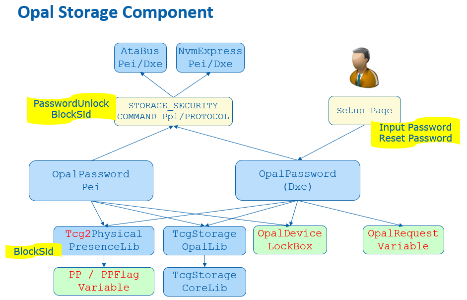
BlockSid
Even if an OPAL device supports locking, an end user may choose to not lock it. In this case, a malicious entity may set a password to lock the OPAL device later and freeze the disk. In order to mitigate this attack, we need block Secure Identifier (SID), even if we don't want to use it.
BlockSid is a policy. It can be controlled by the end user via TCG Physical Presence (PP) interface, which we have discussed before.
In the normal boot path, at EndOfDxe event OpalEndOfDxeEventNotify(), OpalDriver.c SendBlockSidCommand() checks TCG2_BIOS_STORAGE_MANAGEMENT_FLAG_ENABLE_BLOCK_SID from the Tcg2PhysicalPresenceFlags and sends an OpalBlockSid() command if it is set.
In the S3 resume path, OpalPasswordPei.c UnlockOpalPassword() checks the same flag and sends an OpalBlockSid() command after it unlocks the devices one by one.
See Figure 10 and Figure 13 for the BlockSid action in PP and OPAL driver.
TPer reset
When a platform firmware detects the MOR request, it means an unexpected system reset happened and the system might not erase the secrets from the memory. It also means the disk protected region might be also unlocked. In order to mitigate the reset attack, the platform not only cleans the memory content, but the platform also needs to issue a TPer reset command to the TCG storage devices.
The MemoryOverwriteControl module manages the MemoryOverwriteRequestControl (MOR) variable. At the EndOfDxe event, TcgMor.c TPerResetAtEndOfDxe() locates all security storage devices and sends a TPer reset command in InitiateTPerReset().
The platform also needs to ensure all trusted storages are connected before the EndOfDxe event. A PlatformBds module, such as BoardBdsHookLib, needs to process the TCG MOR request. ProcessTcgMor() needs to check if there is any MOR request and connect the platform specific trusted storage.
See Figure 12 for the TPer reset action in MOR driver.